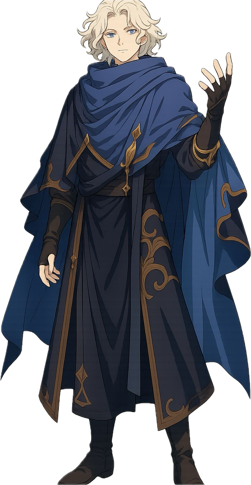
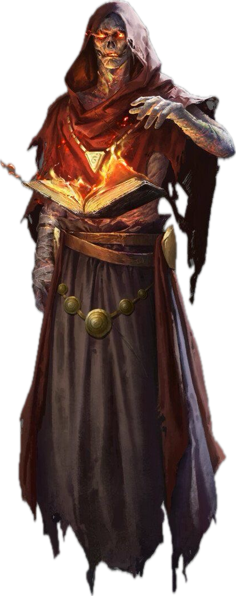
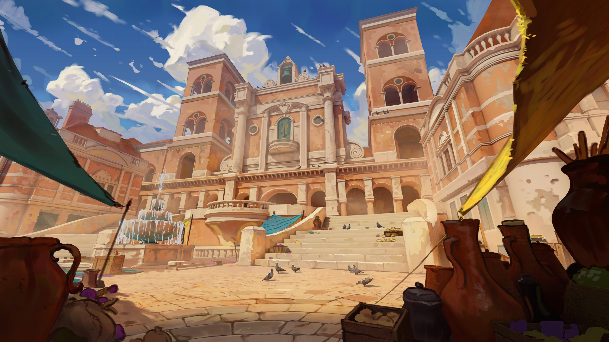
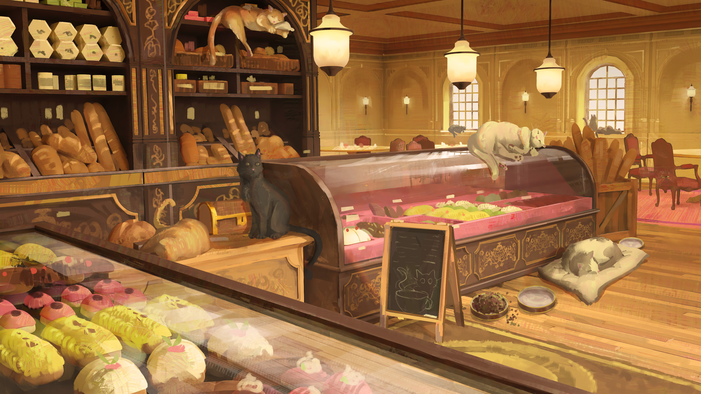
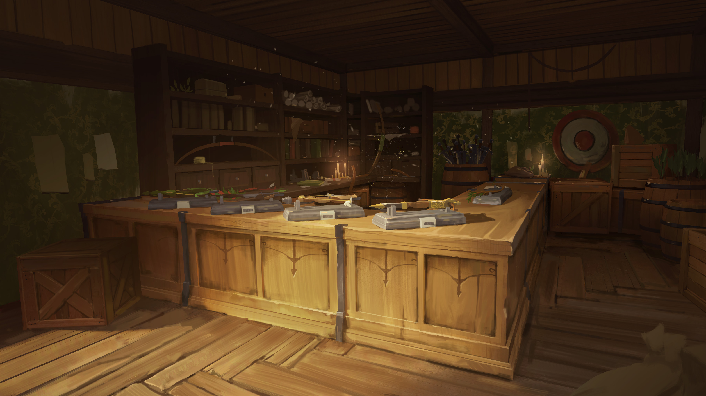
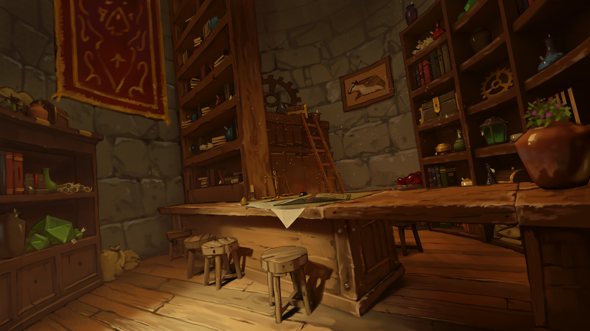

The Statue Heist
An artisan's contest. A stolen legacy. A sleeping horror underneath.
Introduction
Months ago, whilst mapping an island now called SoftEarth, explorers made a remarkable discovery — a magically pliable, marble-like substance that surrenders to the intent of whoever handles it. Shape it, let it rest undisturbed for a few days, and it hardens to stone. Stone with the perfect memory of your vision.
The Horizon Keepers investigated and declared it safe. Now the whole artisanal community of The Drifting Crown is buzzing — bakers, tailors, stoneworkers alike are racing to realise their grandest visions.
A contest is underway in the Magister's Market, the artisanal heart of the Crown. The finest statues will be displayed in the Horizon Keeper's Library Courtyard for centuries to come.
This morning… several of the most promising statues have vanished.
DM Info — The Truth
Hidden from PlayersThe earthquakes caused by the island's arrival have cracked the chamber holding the primordial earth being Kaldorzen. She cannot fully materialise, but she has enough power to influence within that chamber. She made a pact with Gorrath — bring her statues that resemble dangerous creatures or weapons, and bring her the sculptor Tarin StoneChisel so she can use him to build an army and create a vessel to inhabit.
Why Only Those Statues?
Kaldorzen only had Gorrath steal statues resembling dangerous creatures or weapons — these are the raw material for her stone army. The statue army already in her chamber is made from the ground up and cannot be moved with anti-gravity.
How to Seal Her
The players must find the sealing scroll in the First Chamber and read it aloud, uninterrupted, for 3 rounds within 30 feet of the tomb. Even moving breaks concentration.
If the players are delayed long enough, Kaldorzen completes the ritual and the giant stone dragon materialises fully. If partially delayed — debuffed dragon. If stopped entirely — she is resealed.
Hook
Dawn in the Magister's Market. The smell of fresh bread, the clatter of chisels — and then screaming. Artisans pouring into the square, frantic. Statues are gone. Days of work, vanished.
The Horizon Keepers are unconcerned: "Perhaps statue-eating monsters came over for a midnight snack? We've seen weirder islands. Just handle it."
In reality, only statues resembling dangerous creatures or weapons are missing. A sharp player noticing this pattern is rewarded — it suggests intentionality, not opportunistic theft. Tarin StoneChisel has also been kidnapped. His big sister Alexandra is desperately asking anyone who will listen for help.
NPCs
Responsible for moving the SoftEarth stones to the Market using his Ring of Reverse Gravity. Corrupted and under Kaldorzen's influence — he stole the statues and kidnapped Tarin.
He returns towards end of day. Once players are on the right track, he hides his ring and claims it was stolen. He offers to help — to delay and mislead them. If cornered, he meets them at the mine entrance, "looking for his ring."
Round 1: Misty Step away, then attack.
Round 2: Hold Person + escape via Fly.
Insight: Perceptive players may see through him — confrontation triggers combat. Intimidation after defeat gets him talking.

One of the greatest artisans in the Crown. A sorcerer who weaves earth spells into his work. His statues decorate streets and courtyards all across town.
He has been kidnapped to serve as Kaldorzen's sculptor — building the great stone dragon that will be her vessel. His sister Alexandra is desperately searching for him.

Tall and slender with an extraordinarily long white moustache, high cheekbones, and long hair tied in a manbun. Speaks with a distinct flair. His entry to the contest was a breathtaking bread sculpture — now gone.

An elegant individual. Her purple hair is piled in a comically oversized bun with a ball of wool and sewing needles woven into it. Her corset flows into a dress that ends in marten-skin boots. Precise and businesslike.
If the players are stuck, Crok can supply a scroll or item that helps them follow the trail. He quotes a ridiculous price — but with a successful Persuasion roll he'll help them in exchange for a future favour, free of charge. Full NPC profile ↓

A lich who, after being tricked and losing his family, chose to do good with his immortal life. He guards crypts under contract, including this one. Casts Zone of Truth and questions intruders before letting them pass.
"The seal has been broken — somehow another entrance was opened. Kaldorzen must be awake."
Clues & Investigation
The Trail
- Stone chips and fragments are scattered wherever statues were removed — knocked loose while floating past building edges.
- INT or Survival — highest result guesses the stone chips don't belong there.
- A trail of loose, soft, red dirt — unique to the new little island — leads from the workshops to the bridge between the islands.
- All missing statues resembled dangerous creatures or weapons — a pattern the players may or may not clock on their own.
The Reverse Gravity Angle
The stone chips near elevated edges are the biggest tell — the statues were lifted and floated, not dragged. Once players suspect anti-gravity, they can look for who had that capability. Gorrath's Ring of Reverse Gravity is the answer.
If players get close to the truth, Gorrath hides the ring and claims it was stolen. He'll offer to join them and then subtly delay progress, lead them into traps, and stall long enough for the dragon ritual to complete.
If he's defeated in combat, a successful Intimidation check gets him to confess everything he knows.
5-Room Adventure Flow
Outcome Branches
Players figure out Gorrath is behind it before reaching the temple. Confrontation breaks out immediately. Race to the boss chamber to stop the ritual before completion.
Gorrath successfully delays them. Betrayal happens at the boss room door or inside. Dragon may be partially or fully awakened.
Ritual completes. Kaldorzen inhabits the dragon and escapes. Sets up a future encounter or campaign hook.
- Success: Prevent dragon awakening. Tarin is saved.
- Partial: Dragon awakens weakened.
- Failure: Dragon escapes — future problem.
The Temple — Entrance & Puzzle
Approaching the Temple
As lush, dense vines cover the edge of a cliff in front of you, you see what look like pillars hidden behind them. They are old, ancient — nothing like you have seen before.
History DC 13 — The carvings are Primordial: a prayer to an earth elemental.
Descending Into the Temple
The path after the entrance is more cave than corridor — but there is a definite path to follow. You go deep into the earth, to the point where you doubt there is an end to this place. It is completely dark, yet there is no dust. The air is still, and breathing comes easier than it normally would. There is a calming magical presence, growing stronger the deeper you go.
You make your way to a dead end in a large cavern, faced with giant double doors — tens of feet high. Frescoes line the walls. At centre, against the far wall, stands a statue of what looks like an earth elemental: taking a knee, palms upturned, holding something up. In front of it, a small brazier.
If examined: "They are old and cracked but still tell a story — a battle against what looks like the statue in the room, ending with its imprisonment. You are standing in the entrance of a prison."
"If time comes when we can't stand guard — the dead shall guard he who has been locked."
The Puzzle — Light the Brazier
Lighting the brazier begins the ritual sequence. Merandiel poses riddles. Players must answer. The final correct answer summons Merandiel himself.
Wrong answer: Nothing, or 1d6 Psychic damage (DM's discretion).
Correct answer: Undead spawn as shown below — or the puzzle simply advances (modify for pacing).
| Riddle | Answer | Undead Spawned |
|---|---|---|
| "I am taken, not given. I grow heavier when shared. The righteous seek me, the wicked flee me. I am carried so others may stand. What am I?" | Burden / Duty | 1d4 + 2 Skeletons |
| "I reveal, yet I do not speak. I burn, yet I do not consume. I blind those who deny me, and guide those who seek me. What am I?" | Light / Truth | 1d4 + 2 Zombies |
| "I am given to all, yet earned by few. I may be swift, or I may wait lifetimes. Kings fear me, beggars trust me. I come for all in the end. What am I?" | Judgment / Justice | 1d4 / 2 Wights |
| "I died, yet I remain. I guard, yet I do not live. My soul is bound, my purpose unbroken. I am neither damned nor free. What am I?" | Lich | Merandiel appears |
Merandiel Frostborn
The final answer summons the lich guardian. He casts Zone of Truth and asks their intentions. If truthful and good — he lets them pass and shares what he knows:
"The seal has been broken. Something went wrong — somehow another entrance has been opened up. Kaldorzen must be awake."
Chamber 1 — The Oath Room
With an almost deafening sound the giant stone wall begins lowering into the floor. Dust stirs up — you cover your faces. As it settles, a small chamber opens, perhaps the size of the room you just left, with an open arch leading into a completely dark, much larger chamber beyond.
This room is illuminated. A golden, soft glow emanates from the eyes of six statues on small pedestals, all pointing their swords toward the centre. At the centre stands a paladin, sword held horizontally — unusual. Something is written on the blade.
"To those who fight for those who can't — tell me your oath, and my sword shall yield."
A Paladin (or any player willing to commit to an oath) speaks the words. A stone door grinds open revealing a small side chamber: magical items laid out on stone tables, items that match artefacts depicted in the frescoes and statues.
- Magic items from the table below (DM selects or rolls)
- A Sealing Scroll — instructions for re-sealing Kaldorzen. Must be read aloud, uninterrupted, for 3 rounds within 30 ft of the tomb. Even moving breaks concentration.
Chamber 2 — The Stone Army
This chamber is completely dark — save for the faintest source of light at the very far end. Has anyone got a source of light?
This gigantic hall — tens of feet tall — is filled with pedestals. Tens of them. Hundreds. Giant, pillar-like pedestals topped with statues of warriors. But their arms, their torsos — they are not humanoid. You soon realise these are earth elementals. Primordial warriors. Enough to threaten cities. Perhaps kingdoms. But they are not moving.
These statues are Kaldorzen's ancient army — built from the ground up, not transported in. They cannot be moved with anti-gravity. If the ritual completes, she could animate them all. Let the players feel the weight of what's at stake here.
Boss Chamber
Climax
As they enter the chamber they see a stone owlbear, a stone minotaur — and a man using Mold Earth to shape the silhouette of something enormous. A dragon. Kaldorzen's voice reverberates through the stone around you.
The ritual to transfer Kaldorzen's soul into the dragon takes 1d4 rounds from when the players enter. Roll at the start of the encounter and track secretly.
Players can interrupt by stopping Tarin (grapple, knock unconscious, Silence spell, etc.) or by reading the sealing scroll near the tomb.
The Enemies
Stone Owlbear
HP: 57 | Statblock: Owlbear
Battlefield Action — Leap: Leaps up to 40 ft. DEX DC 15 or fall prone + take full damage in a 10 ft circle. On save: half damage and remain standing.
Stone Minotaur
Statblock: Minotaur | Charges recklessly, moving at least 10 ft for bonus damage.
Battlefield Action — Eruption: Slams waraxe into the ground. Cracks snake outward. 2d8 damage DEX DC 16. Move away from impact to reduce damage — see Battlefield Actions section.
Stone Dragon (Partial/Full)
Statblock: Young White Dragon (re-flavoured) — earth/stone damage instead of cold, stone pillar eruptions instead of breath weapon, Stomp replacing breath.
If ritual is fully complete: use full statblock. If partially interrupted: reduce HP by half and remove one of its legendary actions.
Gorrath (if not defeated earlier)
Statblock: Mage + Hold Person. Attacks from behind. "Are you done?"
Winning Conditions
- Stop the ritual: Read the sealing scroll near the tomb, uninterrupted, for 3 rounds while standing still.
- Stop Tarin: Physically interrupt him — he is under magical compulsion, not evil. Freeing him is preferable to harm.
- Defeat the guardians: Owlbear and Minotaur must be dealt with to create space to perform the sealing.
Magic Items
Roll d10 or select. Found on the stone tables in Chamber 1.
| d10 | Item | Effect | Charges |
|---|---|---|---|
| 1 | Spear of the Shattered Sky | Throw → lightning storm (15 ft radius, 4d8 lightning, Dex save). Fail → knocked prone. Spear reforms in hand. | 1 use |
| 2 | Orb of Volcanic Ruin | Throw → lava burst (20 ft radius, 5d6 fire + difficult terrain for 1 round). | 1 use |
| 3 | Cape of the Elusion | Reaction when hit by an attack you can see — halve the damage. | 1 use |
| 4 | Stonebreaker Maul | +1 maul. On hit, +2d6 force vs creatures/objects; double damage vs stone constructs. | 3 procs |
| 5 | Ring of Thunder Step | Teleport 90 ft + 3d10 thunder explosion at origin. | 1 use |
| 6 | Potion of Giant Strength (Hill) | STR becomes 21 for 1 hour. | 1 use |
| 7 | Figurine of the Marble Guardian | Summon a Stone Owlbear ally for 10 minutes. | 1 use |
| 8 | Blade of Echoing Strikes | Once per turn, a spectral echo deals +1d8 damage. | 5 rounds |
| 9 | Gloves of Shaping Earth | Mold Earth at will; once: stone spike line (3d8 damage). | 1 big use |
| 10 | Horn of the War Titan | Allies gain advantage on attacks for 1 round. | 1 use |
Battlefield Actions
Tell Phase — starts at the end of the boss's turn. No damage, just a signal.
Resolution Phase — triggers at the start of the boss's next turn. Players have one full initiative cycle to react.
All Battlefield Actions can be neutralized (stopped entirely) or mitigated (reduced). Use at least two per boss so actions rotate and stay unpredictable.
CR 3–9: 3d10 | CR 10–16: 9d10 | CR 17–23: 11d10 | CR 24+: 13d10
Saving throw DC: 8 + key ability modifier + Proficiency Bonus
Eruption Minotaur / Earth Boss
Summoning Minions
Cleave
Ray
Watchful Eye
Eye of the Hurricane
Perfect Illusion
Enchanting Ballad
Tactical Retreat
Danse Macabre
Linked Notes
Notes referenced in this adventure. Click to expand. Hover over any highlighted link in the text to preview.
Monster mage
Mages spend their lives in the study and practice of magic. Good-aligned mages offer counsel to nobles and others in power, while evil mages dwell in isolated sites to perform unspeakable experiments without interference.
Monster minotaur
A minotaur's roar is a savage battle cry that most civilized creatures fear. Born into the mortal realm by demonic rites, minotaurs are savage conquerors and carnivores that live for the hunt. Their brown or black fur is stained with the blood of fallen foes, and they carry the stench of death.
The Beast Within
Most minotaurs are solitary carnivores that roam labyrinthine dungeons, twisting caves, primeval woods, and the maze-like streets and passages of desolate ruins. A minotaur can visualize every route it might take to close the distance to its prey.
The scent of blood, the tearing of flesh, and the cracking of bones spur a minotaur's lust for carnage, overwhelming all thought and reason. In a blood rage, a minotaur charges anything it sees, butting and goring like a battering ram, then chopping the fallen in twain.
Apart from ambushing creatures that wander into its labyrinth, a minotaur cares little for strategy or tactics. Minotaurs seldom organize, they don't respect authority or hierarchy, and they are notoriously difficult to enslave, let alone control.
Cults of the Horned King
Minotaurs are the dark descendants of humanoids transformed by the rituals of cults that reject the oppression of authority by returning to nature. Inductees often mistake these cults for druidic circles or totemic religions whose ceremonies involve entering a labyrinth while wearing a ceremonial animal mask.
Within these bounded environments, cultists hunt, kill, and eat wild beasts, indulging their basest primal urges. In the end, however, sacrificial animals are exchanged for humanoid sacrifice-sometimes an inductee that tried to escape the cult after learning its secrets. These labyrinths become blood-soaked halls of slaughter, echoing to the cultists' savagery.
Unknown to all but their highest-ranking leaders, these mystery cults are creations of the demon lord Baphomet, the Horned King, whose layer of the Abyss is a gigantic labyrinth. Some of his followers are fervent supplicants that plead for strength and power. Others come to the cult seeking a life free from authority's chains-and are liberated of their humanity instead as Baphomet transforms them into the minotaurs that echo his own savage form.
Although they begin as creations of the Horned King, minotaurs can breed true with one another, giving rise to an independent race of Baphomet's savage children in the world.
Monster owlbear
An owlbear's screech echoes through dark valleys and benighted forests, piercing the quiet night to announce the death of its prey. Feathers cover the thick, shaggy coat of its bearlike body, and the limpid pupils of its great round eyes stare furiously from its owlish head.
Deadly Ferocity
The owlbear's reputation for ferocity, aggression, stubbornness, and sheer ill temper makes it one of the most feared predators of the wild. There is little, if anything, that a hungry owlbear fears. Even monsters that outmatch an owlbear in size and strength avoid tangling with it, for this creature cares nothing about a foe's superior strength as it attacks without provocation.
Consummate Predators
An owlbear emerges from its den around sunset and hunts into the darkest hours of the night, hooting or screeching to declare its territory, to search for a mate, or to flush prey into its hunting grounds. These are typically forests familiar to the owlbear, and dense enough to limit its quarry's escape routes.
An owlbear makes its den in a cave or ruin littered with the bones of its prey. It drags partially devoured kills back to its den, storing portions of the carcass among the surrounding rocks, bushes, and trees. The scent of blood and rotting flesh hangs heavy near an owlbear's lair, attracting scavengers and thus luring more prey.
Owlbears hunt alone or in mated pairs. If quarry is plentiful, a family of owlbears might remain together for longer than is required to rear offspring. Otherwise, they part ways as soon as the young are ready to hunt.
Savage Companions
Although they are more intelligent than most animals, owlbears are difficult to tame. However, with enough time, food, and luck, an intelligent creature can train an owlbear to recognize it as a master, making it an unflinching guard or a fast and hardy mount. People of remote frontier settlements have even succeeded at racing owlbears, but spectators bet as often on which owlbear will attack its handler as they do on which will reach the finish line first.
Elven communities encourage owlbears to den beneath their treetop villages, using the beasts as a natural defense during the night. Hobgoblins favor owlbears as war beasts, and hill giants and frost giants sometimes keep owlbears as pets. A starved owlbear might show up in a gladiatorial arena, ruthlessly eviscerating and devouring its foes before a bloodthirsty audience.
Owlbear Origins
Scholars have long debated the origins of the owlbear. The most common theory is that a demented wizard created the first specimen by crossing a giant owl with a bear. However, venerable elves claim to have known these creatures for thousands of years, and some fey insist that owlbears have always existed in the Feywild.
[!quote] A quote from Xarshel Ravenshadow, Gnome Professor of Transmutative Science at Morgrave University > The only good thing about owlbears is that the wizard who created them is probably dead.
Monster young-white-dragon
The smallest, least intelligent, and most animalistic of the chromatic dragons, white dragons dwell in frigid climes, favoring arctic areas or icy mountains. They are vicious, cruel reptiles driven by hunger and greed.
A white dragon has feral eyes, a sleek profile, and a spined crest. The scales of a wyrmling white dragon glisten pure white. As the dragon ages, its sheen disappears and some of its scales begin to darken, so that by the time it is old, it is mottled by patches of pale blue and light gray. This patterning helps the dragon blend into the realms of ice and stone in which it hunts, and to fade from view when it soars across a cloud-filled sky.
Primal and Vengeful
White dragons lack the cunning and tactics of most other dragons. However, their bestial nature makes them the best hunters among all dragonkind, singularly focused on surviving and slaughtering their enemies. A white dragon consumes only food that has been frozen, devouring creatures killed by its breath weapon while they are still stiff and frigid. It encases other kills in ice or buries them in snow near its lair, and finding such a larder is a good indication that a white dragon dwells nearby.
A white dragon also keeps the bodies of its greatest enemies as trophies, freezing corpses where it can look upon them and gloat. The remains of giants, remorhazes, and other dragons are often positioned prominently within a white dragon's lair as warnings to intruders.
Though only moderately intelligent, white dragons have extraordinary memories. They recall every slight and defeat, and have been known to conduct malicious vendettas against creatures that have offended them. This often includes silver dragons, which lair in the same territories as whites. White dragons can speak as all dragons can, but they rarely talk unless moved to do so.
Lone Masters
White dragons avoid all other dragons except whites of the opposite sex. Even then, when white dragons seek each other out as mates, they stay together only long enough to conceive offspring before fleeing into isolation again.
White dragons can't abide rivals near their lairs. As a result, a white dragon attacks other creatures without provocation, viewing such creatures as either too weak or too powerful to live. The only creatures that typically serve a white dragon are intelligent humanoids that demonstrate enough strength to assuage the dragon's wrath, and can put up with sustaining regular losses as a result of its hunger. This includes dragon-worshiping kobolds, which are commonly found in their lairs.
Powerful creatures can sometimes gain a white dragon's obedience through a demonstration of physical or magical might. Frost giants challenge white dragons to prove their own strength and improve their status in their clans, and their cracked bones litter many a white dragon's lair. However, a white dragon defeated by a frost giant often becomes its servant, accepting the mastery of a superior creature in exchange for asserting its own domination over the other creatures that serve or oppose the giant.
Treasure Under Ice
White dragons love the cold sparkle of ice and favor treasure with similar qualities, particularly diamonds. However, in their remote arctic climes, the treasure hoards of white dragons more often contain walrus and mammoth tusk ivory, whale-bone sculptures, figureheads from ships, furs, and magic items seized from overly bold adventurers.
Loose coins and gems are spread across a white dragon's lair, glittering like stars when the light strikes them. Larger treasures and chests are encased in layers of rime created by the white dragon's breath, and held safe beneath layers of transparent ice. The dragon's great strength allows it to easily access its wealth, while lesser creatures must spend hours chipping away or melting the ice to reach the dragon's main hoard.
A white dragon's flawless memory means that it knows how it came to possess every coin, gem, and magic item in its hoard, and it associates each item with a specific victory. White dragons are notoriously difficult to bribe, since any offers of treasure are seen as an insult to their ability to simply slay the creature making the offer and seize the treasure on their own.
A White Dragon's Lair
White dragons lair in icy caves and deep subterranean chambers far from the sun. They favor high mountain vales accessible only by flying, caverns in cliff faces, and labyrinthine ice caves in glaciers. White dragons love vertical heights in their caverns, flying up to the ceiling to latch on like bats or slithering down icy crevasses.
A legendary white dragon's innate magic deepens the cold in the area around its lair. Mountain caverns are fast frozen by the white dragon's presence. A white dragon can often detect intruders by the way the keening wind in its lair changes tone.
A white dragon rests on high ice shelves and cliffs in its lair, the floor around it a treacherous morass of broken ice and stone, hidden pits, and slippery slopes. As foes struggle to move toward it, the dragon flies from perch to perch and destroys them with its freezing breath.
Chromatic Dragons
The black, blue, green, red, and white dragons represent the evil side of dragonkind. Aggressive, gluttonous, and vain, chromatic dragons are dark sages and powerful tyrants feared by all creatures-including each other.
Driven by Greed
Chromatic dragons lust after treasure, and this greed colors their every scheme and plot. They believe that the world's wealth belongs to them by right, and a chromatic dragon seizes that wealth without regard for the humanoids and other creatures that have "stolen" it. With its piles of coins, gleaming gems, and magic items, a dragon's hoard is the stuff of legend. However, chromatic dragons have no interest in commerce, amassing wealth for no other reason than to have it.
Creatures of Ego
Chromatic dragons are united by their sense of superiority, believing themselves the most powerful and worthy of all mortal creatures. When they interact with other creatures, it is only to further their own interests. They believe in their innate right to rule, and this belief is the cornerstone of every chromatic dragon's personality and worldview. Trying to humble a chromatic dragon is like trying to convince the wind to stop blowing. To these creatures, humanoids are animals, fit to serve as prey or beasts of burden, and wholly unworthy of respect.
Dangerous Lairs
A dragon's lair serves as the seat of its power and a vault for its treasure. With its innate toughness and tolerance for severe environmental effects, a dragon selects or builds a lair not for shelter but for defense, favoring multiple entrances and exits, and security for its hoard.
Most chromatic dragon lairs are hidden in dangerous and remote locations to prevent all but the most audacious mortals from reaching them. A black dragon might lair in the heart of a vast swamp, while a red dragon might claim the caldera of an active volcano. In addition to the natural defenses of their lairs, powerful chromatic dragons use magical guardians, traps, and subservient creatures to protect their treasures.
Queen of Evil Dragons
Tiamat the Dragon Queen is the chief deity of evil dragonkind. She dwells on Avernus, the first layer of the Nine Hells. As a lesser god, Tiamat has the power to grant spells to her worshipers, though she is loath to share her power. She epitomizes the avarice of evil dragons, believing that the multiverse and all its treasures will one day be hers and hers alone.
Tiamat is a gigantic dragon whose five heads reflect the forms of the chromatic dragons that worship her-black, blue, green, red, and white. She is a terror on the battlefield, capable of annihilating whole armies with her five breath weapons, her formidable spellcasting, and her fearsome claws.
Tiamat's most hated enemy is Bahamut the Platinum Dragon, with whom she shares control of the faith of dragonkind. She also holds a special enmity for Asmodeus, who long ago stripped her of the rule of Avernus and who continues to curb the Dragon Queen's power.
Dragons
True dragons are winged reptiles of ancient lineage and fearsome power. They are known and feared for their predatory cunning and greed, with the oldest dragons accounted as some of the most powerful creatures in the world. Dragons are also magical creatures whose innate power fuels their dreaded breath weapons and other preternatural abilities.
Many creatures, including wyverns and dragon turtles, have draconic blood. However, true dragons fall into the two broad categories of chromatic and metallic dragons. The black, blue, green, red, and white dragons are selfish, evil, and feared by all. The brass, bronze, copper, gold, and silver dragons are noble, good, and highly respected by the wise.
Though their goals and ideals vary tremendously, all true dragons covet wealth, hoarding mounds of coins and gathering gems, jewels, and magic items. Dragons with large hoards are loath to leave them for long, venturing out of their lairs only to patrol or feed.
True dragons pass through four distinct stages of life, from lowly wyrmlings to ancient dragons, which can live for over a thousand years. In that time, their might can become unrivaled and their hoards can grow beyond price.
**Dragon Age Categories**
| Category | Size | Age Range | |----------|------|-----------| | Wyrmling | Medium | 5 years or less | | Young | Large | 6–100 years | | Adult | Huge | 101–800 years | | Ancient | Gargantuan | 801 years or more | ^dragon-age-categories
NPC Crok Ruthesk

Gallery
NPCs

Locations



